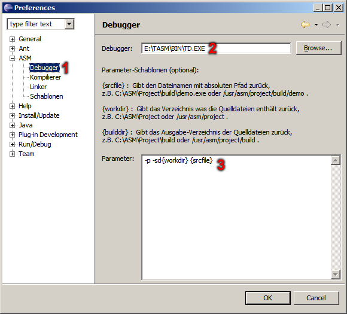
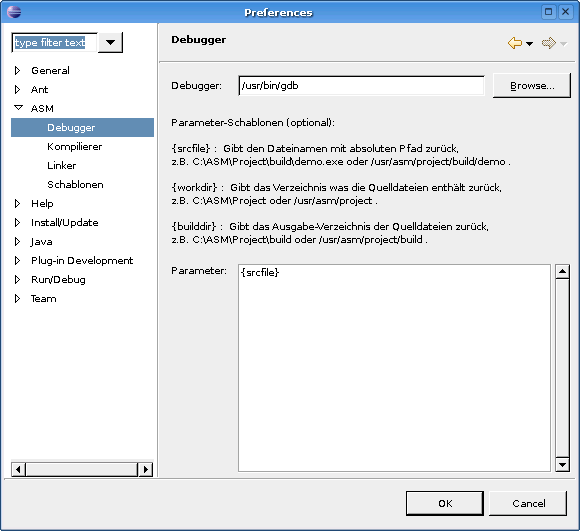

ASM Plug-In - Debugger-Einstellungen
In diesem Dialog wird der Debugger und dessen Parameter für die Ausführbaren-Dateien festgelegt.


Auswahl für die Debugger-Einstellungen.
Pfad zur Debugger-Anwendung.
Parameter des Debuggers.